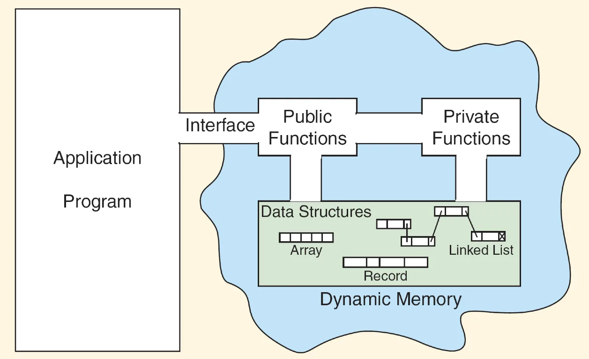
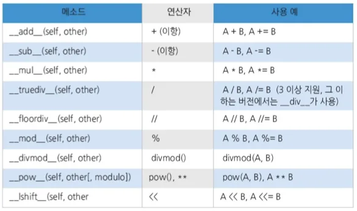

#1단계 : 클래스 생성
class Car :
color = ""
speed = 0
def upSpeed(self, value) :
self.speed += value
def downSpeed(self, value) :
self.speed -= value
#2단계 : 객체 생성 (인스턴스 생성)
mycar1=Car()
#3단계 : 필드나 메소드 사용
mycar1.speed = 0
mycar1.color = "파랑"
mycar1.upSpeed(30)
print(f"색상 = {mycar1.color}, 속도 = {mycar1.speed}")
# 색상 = 파랑, 속도 = 30class Car:
color = ''
speed = 0
def __init__(self):
self.color = "빨강"
self.speed = 0
myCar1 = Car()class Car:
color = ''
speed = 0
def __init__(self, value1, value2):
self.color = value1
self.speed = value2
## upSpeed(), downSpeed() 함수
myCar1 = Car("빨강", 30)
print(f"색상 = {mycar1.color}, 속도 = {mycar1.speed}")class ~~:
### ~~ 생략
def getName(self):
return self.name
def getSpeed(self):
return self.speed
print(car1.getName(), car1.getSpeed())
#=> 이름과 스피드를 반환하는 함수를 메소드로 만들 수 있음class Car:
color = '' # 인스턴스 변수
speed = 0 # 인스턴스 변수
count = 0 # 클래스 변수
def __init__(self):
self.speed = 0
Car.count += 1
myCar1, myCar2 = None, None
myCar1 = Car()
myCar1.speed = 30
print(myCar1.speed, Car.count) # 30, 1
myCar2 = Car()
myCar2.speed = 60
print(myCar2.speed, myCar2.count) # 60, 2class 서브 클래스(슈퍼 클래스):
//서브 클래스의 내용을 코딩class Car:
speed = 0
def upSpeed(self, value):
self.speed += value
def downSpeed(self, value):
self.speed -= value
class Sedan(Car):
seatNum = 0
def getSeatNum(self):
return self.seatNumclass Car:
speed = 0
def upSpeed(self, value):
self.speed += value
def downSpeed(self, value):
self.speed -= value
class Sedan(Car):
seatNum = 0
def upSpeed(self, value):
self.speed += value
if self.speed>150:
self.speed = 150
// 최대속도라는 새로운 조건을 추가할 수 있음
def getSeatNum(self):
return self.seatNum

class Vector:
def __init__(self, x, y):
self.x, self.y = x, y
def __add__(self, other):
return Vector(self.x + other.x, self.y + other.y)
def get_vector(self):
return self.x, self.y
v1 = Vector(1, 2)
v2 = Vector(3, 4)
v3 = v1.__add__(v2)
print(v3.get_vector())
v3 = v1 + v2
print(v3.get_vector())\>(4, 6) (4, 6)class Animal:
def __init__(self, name):
self.name = name
def speak(self):
return '알 수 없음'
class Dog(Animal):
def speak(self):
return '멍멍!'
class Cat(Animal):
def speak(self):
return '야옹!'
animalList = [Dog('dog1'),
Dog('dog2'),
Cat('cat1')]
for a in animalList:
print (a.name + ': ' + a.speak())